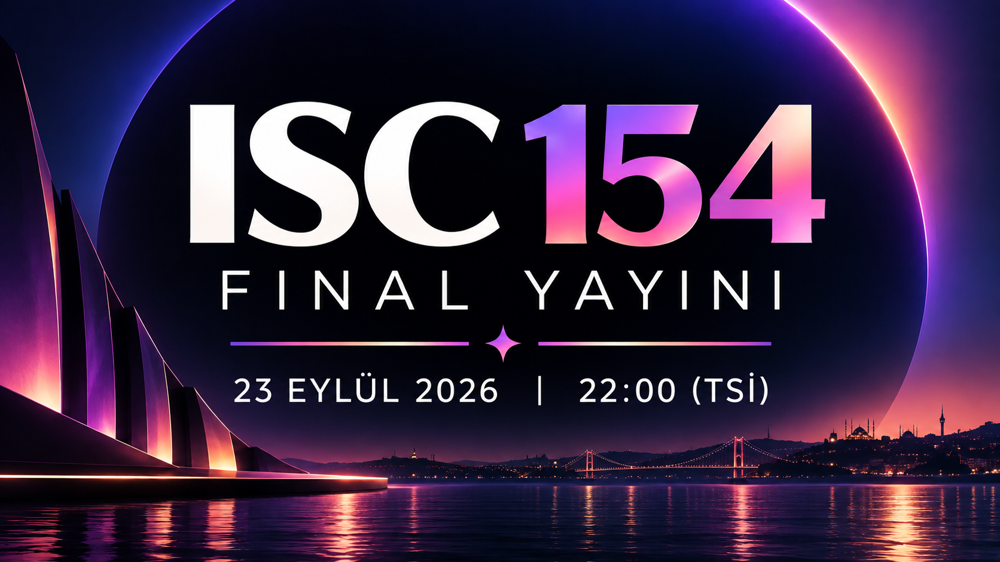

YouTube playlist
Loading current edition
International Song Contest · Current Edition
ISC —
Güncel edisyon yükleniyor…
Şimdi öne çıkan
—
— · —
RESULTS STATUS LOADING

FİNAL YAYINIISC 154 · CANLI ETKİNLİK
Birlikte izleyelim.
23 Eylül gecesi sekiz şarkıyı aynı anda, aynı yayın odasında izliyoruz. Canlı sohbet ve senkronize oynatma tek ekranda.
Meet the acts
Sahnede kim var?
Güncel edisyonun katılımcıları yükleniyor…
Listen everywhere
Şarkıları burada aç.
Güncel edisyon playlistleri yükleniyor…
Spotify playlist
ISC LIVE
—
Your points. Your country.
VOTING ROOM →
Şimdi sıra sende.
Güncel edisyonun puanlama sistemi yükleniyor…
From the archive magazine
Sahnenin arkasındaki hikâyeler.
ISC yalnızca scoreboard değil. Entry dosyaları, sanatçı hikâyeleri ve geçmiş edisyonların görsel dünyası kalıcı editorial arşivde yaşamaya devam ediyor.
LONG READ · ENTRY 01 · ROLIPEA
Küfür, Özsaygı ve İki Synthesizer Arasında
Lambrini Girls’ün “Cuntology 101” hikâyesi: Brighton barlarından ballroom diline, iki Model D’den Peaches’a uzanan tam dosya.
EDITORIAL · ENTRY 02 · VERDE VERANO
Bir Şarkıcı mı, Bir Persona mı?
Élise de Lune’un “Bonne Nuit” ile kurduğu kusursuz dijital gece: virtual artist kimliği, Soulision Music ağı ve cevapsız kalan gerçek insan sorusu.
EDITORIAL · ENTRY 03 · GÜNEŞ DİYARI
Kabil’den Bombay’a, Göteborg’dan Kapadokya’ya
“MAZAA”nın içinde saklı İsveç pop ağı: Meira Omar, LIAMOO, Melodifestivalen, Emperial ve Kapadokya arasında uzanan tam dosya.
EDITORIAL · ENTRY 04 · SUPERLAND
Tırnaklar, Vize ve Bir Pop Yıldızının Kendini İcat Edişi
Saint Levant’ın “Nails” ile kendine yazdığı zafer marşı: boyalı tırnaklar, erkeklik, Mia Khalifa, Playyard ve üç yıl sonra geri dönen vize meselesi.
EDITORIAL · ENTRY 05 · KIRMIZI
Bir Korsan CD’den Eurovision’a
HAYQ’ın “Mi Patmutyun” hikâyesi: 2006 Erivan’ının korsan müzik kültüründen DerHova’nın 22 Green mix’ine, Eurovision bağlantılarından 2020 remix’ine uzanan tam dosya.
EDITORIAL · ENTRY 06 · CABURYA
Bir Şarkıyı Elli Yıl Sonra Duymak
Laura Pausini, Jeanette ve “¿PORQUÉ TE VAS?”: Sanremo’dan Cría cuervos’a, 1974 pop hafızasından 2026’daki Madrid düetine uzanan tam dosya.


The archive
Her edisyon bir dönem.
Güncel edisyon ve geçmiş yarışmaların kalıcı kayıtları arşivde bir arada.